| Confidence levels | Number of SEs |
|---|---|
| 80% | 1.282 |
| 90% | 1.645 |
| 95% | 1.960 |
| 99% | 2.576 |
| 99.9% | 3.291 |
Introduction to Statistics
Part 2: Inferential statistics and modelling
Sophie Lee
Beyond the sample
Course content
Part 2: Friday 1st November, 2024
- Inferential statistics
- Central limit theorem
- p-values and confidence intervals: how to interpret and communicate results
- Where do these values come from?
Course content
Part 2: Friday 1st November, 2024
- Statistical modelling
- What are models and why are they useful to data analytics?
- How to choose an appropriate model based on the research question
- Model outputs and their interpretations
What are inferential statistics?
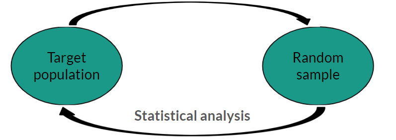
What are inferential statistics?
Inferential statistics make inferences about target population based on a random, representative sample.
Combine sample estimates with sample size and level of precision
Most common inferential statistics: p-values and confidence intervals
Measures of precision
Precision of an estimate quantified by standard error (SE)
Based on sample size and sample variability
Different formula for each type of estimate (e.g. mean, percentage, difference between means)
\(SE(\bar{x}) = \frac{SD}{\sqrt{n}}\)
Measures of precision
Larger SE → less precise
Smaller SE → more precise
\(SE(\bar{x}) = \frac{SD}{\sqrt{n}}\)
For every parameter of interest:
- Larger sample, higher precision → lower standard error
- More variability, lower precision → higher standard error
Inferential statistics work based on the central limit theorem
Central limit theorem

Central limit theorem

Central limit theorem
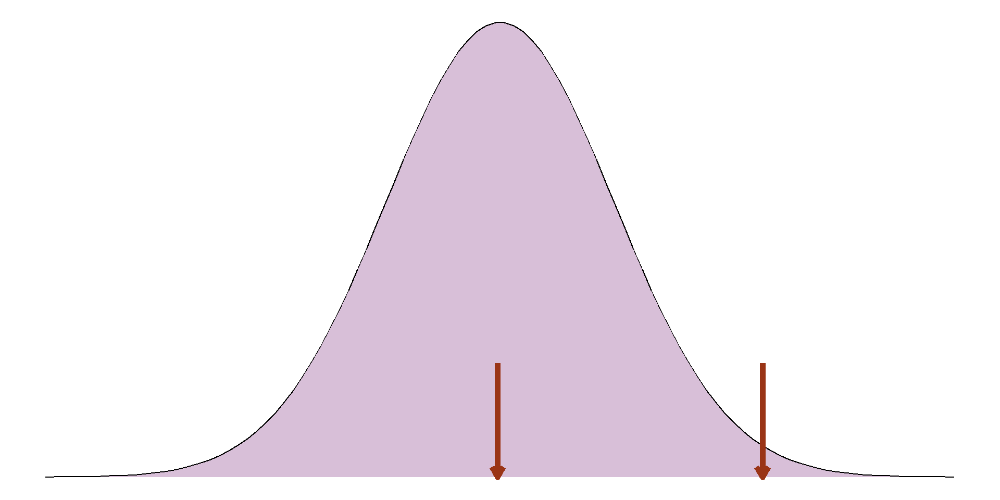Central limit theorem
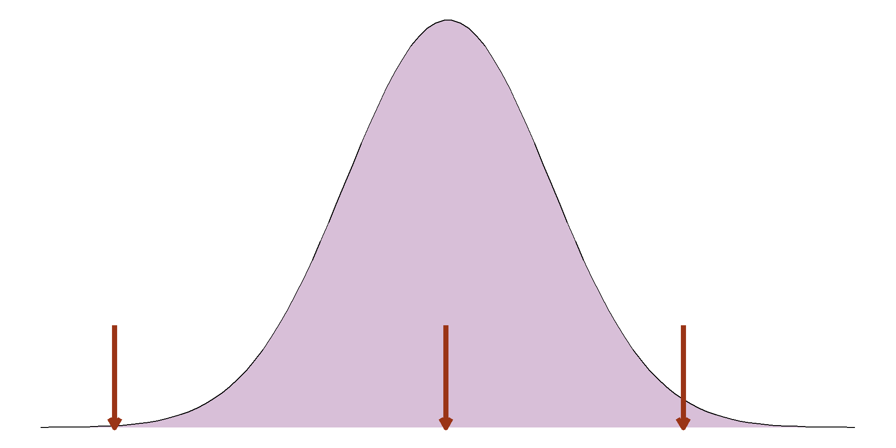Central limit theorem
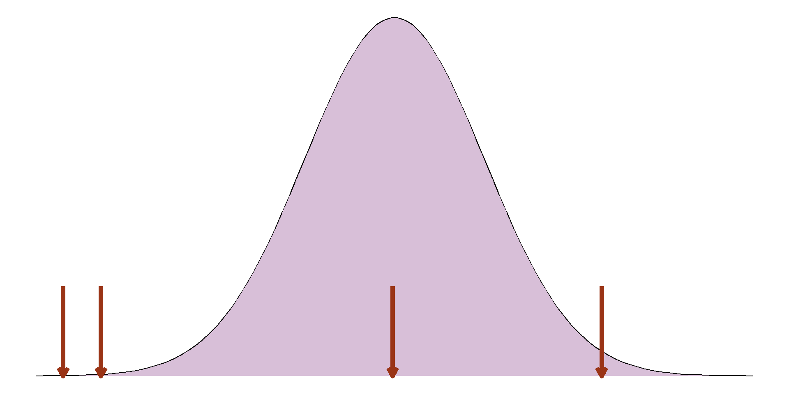Central limit theorem
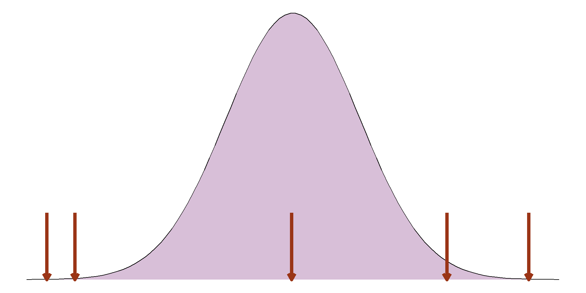Central limit theorem
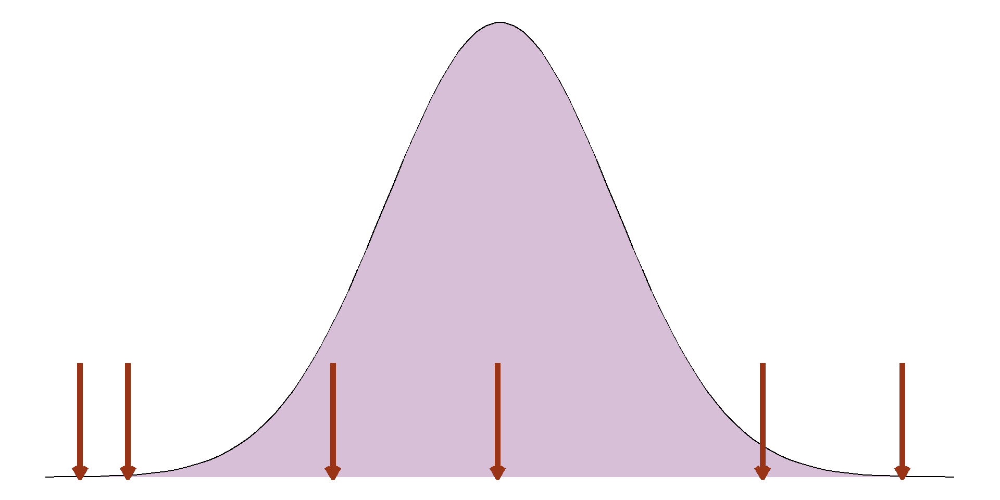Central limit theorem
Central limit theorem
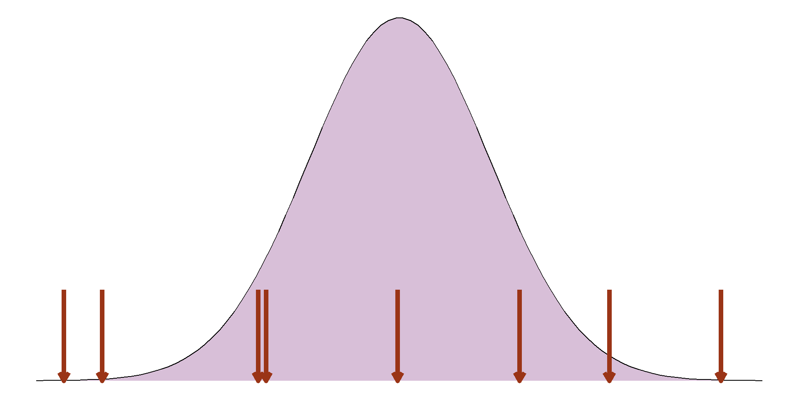Central limit theorem
Central limit theorem

Confidence intervals
- A range of values the true population parameter is compatible with
- Based on sample estimate, precision, and confidence level
Confidence intervals
- A range of values the true population parameter is compatible with
- Based on sample estimate, precision, and confidence level
- Based on central limit theorem, can capture ranges we would expect a percentage of parameter estimates to lie:
\(\bar{x} \pm 1.96 \times SE(\bar{x})\)

Confidence interval example
Let’s compare the body mass of our penguins between sexes.
First, we want to check the distribution of these samples:

Confidence interval example
Both groups appear to be normally distributed, so we can compare the means.
Mean body mass of male penguins: 4010.28g
Mean body mass of female penguins: 3419.16g
Difference in the means (of the sample): 4010.28g - 3419.16g
= 591.12g
Confidence interval example
Difference in the means (of the sample): 591.12g
Standard error of the mean difference= 4.23g
95% confidence interval: 591.12 \(\pm\) 1.96 \(\times\) 4.23
= 582.83g, 599.42g
But what does that mean??
Confidence interval example
95% confidence interval: 582.83g, 599.42g
We are 95% confident that male penguins were between 582.83g and 599.42g heavier than female penguins on average.
Note that this confidence interval only contains positive values.
p-values
- Probability of obtaining a result as extreme or more extreme as the sample if the null hypothesis is true
- Null hypothesis (H0): no difference/association
p-values
p-values

p-values
- Probability of obtaining a result as extreme or more extreme as the sample if the null hypothesis is true
- Null hypothesis (H0): no difference/association
- Low p-value: less evidence to support the null hypothesis
- Very low p-value is known as statistically significant
Statistical significance
Often significance is defined by arbitrary cut-off (usually 0.05)
Be careful with these arbitrary definitions, it is not how probability behaves!
p < 0.05 is significant at the 5% level
We never accept or reject a null hypothesis
p-values example

p-values example
As we are comparing groups, our null hypothesis is that there is no difference in the target population.
Sample mean difference: 591.12g
Standard error of the difference: 4.23g
p-values assume that the null hypothesis is true
p-value example
p-value example
The observed sample mean difference is (591.12 - 0 \(\div\) 4.23) = 139.68 standard errors away from the null hypothesis.
This is so far that we can’t even see it on our histogram!
The probability of this happening if the null were true is VERY VERY small (p < 0.00000000001).
In this case, we would say this difference is highly significant
Relationship between p-values and confidence intervals
Confidence intervals and p-values are based on the same information and so agree with one another
If a p-value is above 0.05, the sample estimate is less than 1.96 SEs away. This means it will be within the 95% confidence interval
If the null hypothesis is outside the 99% confidence interval, it is over 2.576 SEs away from the sample estimate so p < 0.01


Exercise 3:
Inferential statistics
10:00
Statistical modelling
Inferential statistics
Now we know how to interpret and communicate inferential statistics…how do we calculate them?
Almost all parameters that we can estimate from a sample can be presented with inferential statistics.
- Mean
- Proportion/percentage
- Correlation coefficients
- Difference in means
- Difference in proportions
- Model coefficients
Statistical models
Models aim to explain complex process in a simple way.
Statistical models explain these processes using a mathematical equation:
\(g\)(Y) = \(\alpha\) + \(\beta_1X_1\) + \(\dots\) + \(\beta_nX_n\)
Model equations generally consist of
Statistical models
Models aim to explain complex process in a simple way.
Statistical models explain these processes using a mathematical equation:
\(g\)(Y) = \(\alpha\) + \(\beta_1X_1\) + \(\dots\) + \(\beta_nX_n\)
Model equations generally consist of outcome(s),
Statistical models
Models aim to explain complex process in a simple way.
Statistical models explain these processes using a mathematical equation:
\(g\)(Y) = \(\alpha\) + \(\beta_1\)\(X_1\) + \(\dots\) + \(\beta_n\)\(X_n\)
Model equations generally consist of outcome(s), predictor(s)
Statistical models
Models aim to explain complex process in a simple way.
Statistical models explain these processes using a mathematical equation:
\(g\)(Y) = \(\alpha\) + \(\beta_1\)\(X_1\) + \(\dots\) + \(\beta_n\)\(X_n\)
Model equations generally consist of outcome(s), predictor(s) and coefficients
Statistical vs machine learning models
Machine learning models (MLM) are very powerful when making predictions.
However, the way they get these predictions is often shrouded in mystery
Models are not interpretable
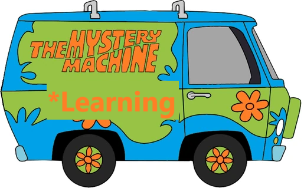
Statistical vs machine learning models
Statistical models are based on probabilistic assumptions
Makes them stricter but interpretable
Statistical models are better at explaining and understanding processes
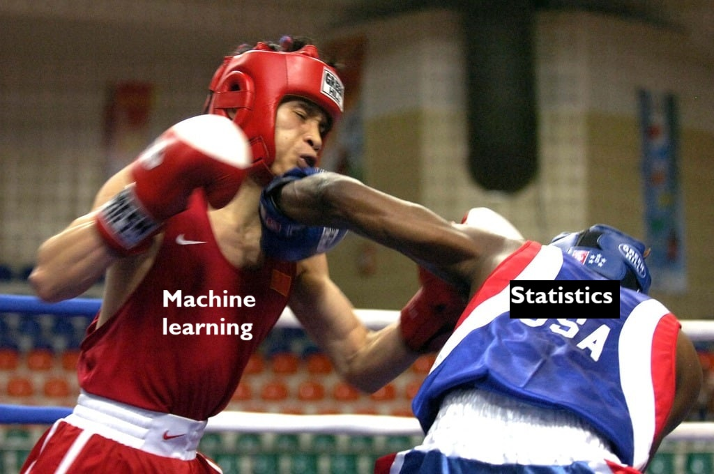
Regression models
Common statistical model are regression models.
Also known as linear models, generalised linear models or GLMs
Choice of regression type depends on the type of outcome variable(s).
All aim to fit a linear equation to a transformation of the outcome (\(g(Y)\))
Regression models
| Outcome type | Regression | Transformation |
|---|---|---|
| Continuous | Linear | Identity |
| Count/rate | Poisson | Log |
| Binary | Logistic | Logit |
| Ordinal | Ordinal logistic | Logit |
| Nominal | Multinomial | Logit |
Linear regression
The simplest statistical modelling approach is a linear model.
This is because coefficient estimates are related to the outcome itself:
\(Y = \alpha + \beta_1X_1 + \dots\)
When \(X_1\) is the only predictor and a continuous variable, linear regression fits a straight line to the data
Linear regression
Let’s fit a model to explore the relationship between penguin’s body mass and flipper length.
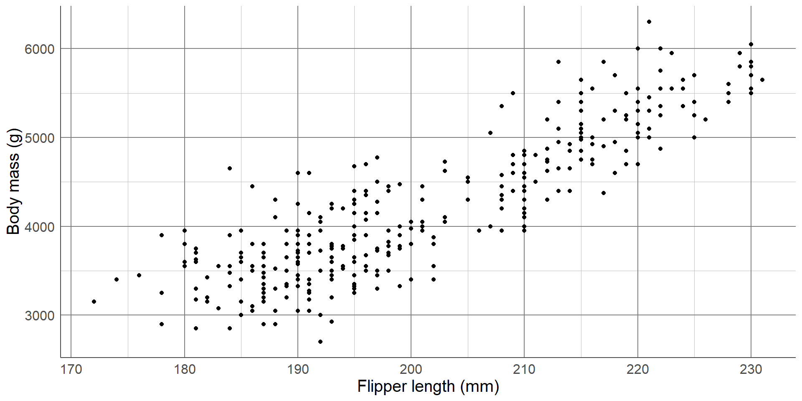Linear regression
Let’s fit a model to explore the relationship between penguin’s body mass and flipper length.
Here, the outcome is body mass and the predictor is flipper length:
Body mass = \(\alpha\) + \(\beta \times\) flipper length
- \(\alpha\) = intercept
- Predicted outcome where predictors = 0
- \(\beta\) = slope
- Expected change in outcome for a unit increase in predictor
Linear regression
Body mass = -5780.83 + 49.69 \(\times\) flipper length
Coefficient estimates | 95% confidence | p-value | |
|---|---|---|---|
Intercept | -5,780.83 | [-6382.36, -5179.3] | <0.001 |
Flipper length | 49.69 | [46.7, 52.67] | <0.001 |
Linear regression
Body mass = -5780.83 + 49.69 \(\times\) flipper length
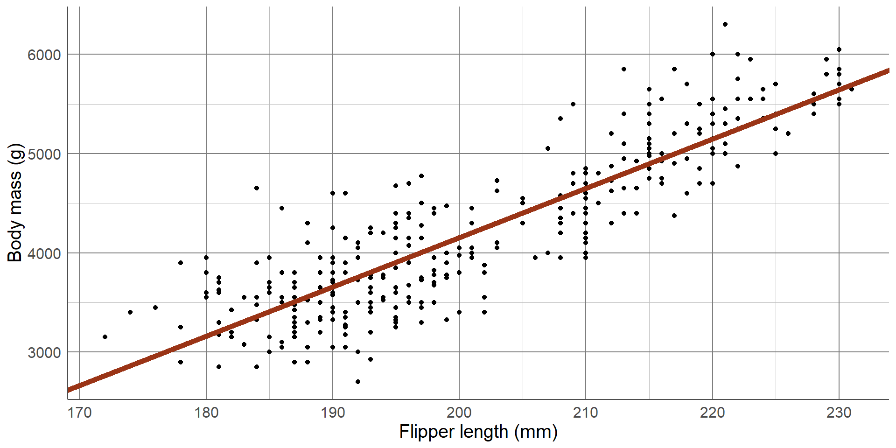Linear regression
Body mass = -5780.83 + 49.69 \(\times\) flipper length
- Intercept = -5780.83
Penguins with flipper length of 0mm had a predicted body mass of -5780.83g
- Slope = 49.69
For every unit increase in flipper length (1mm), body mass was expected to increase by 49.69g
Linear regression
Confidence intervals give a range of values the coefficients are compatible with.
In this sample, the average increase in body mass for every 1mm increase in flipper length was 49.69g
But at the population level, we are 95% confident that this increase could lie between 46.7g and 52.67g
Linear regression
p-values test the null hypothesis of no association: \(\beta\) = 0
These p-values are both too small to be printed in their entirety, therefore the coefficients are statistically significant
For intercept, this has no real use.
For the slope, we have shown a significant association between flipper length and body mass
Multiple regression
One of the benefits of using a regression is that we can take account of confounders
Confounders = background variables that are related to both the outcome and predictor variable(s)
Confounders can create false associations or hide true associations if not properly accounted for
Multiple regression
One of the benefits of using a regression is that we can take account of confounders

Multiple regression
One of the benefits of using a regression is that we can take account of confounders
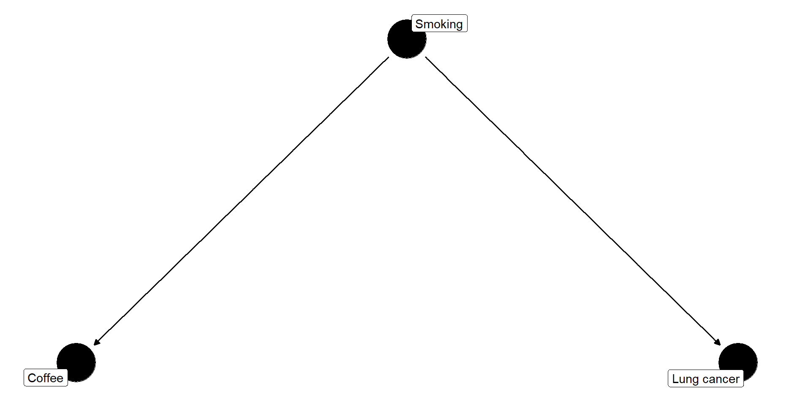Multiple regression
Let’s extend the previous model to account for the sex of penguins:
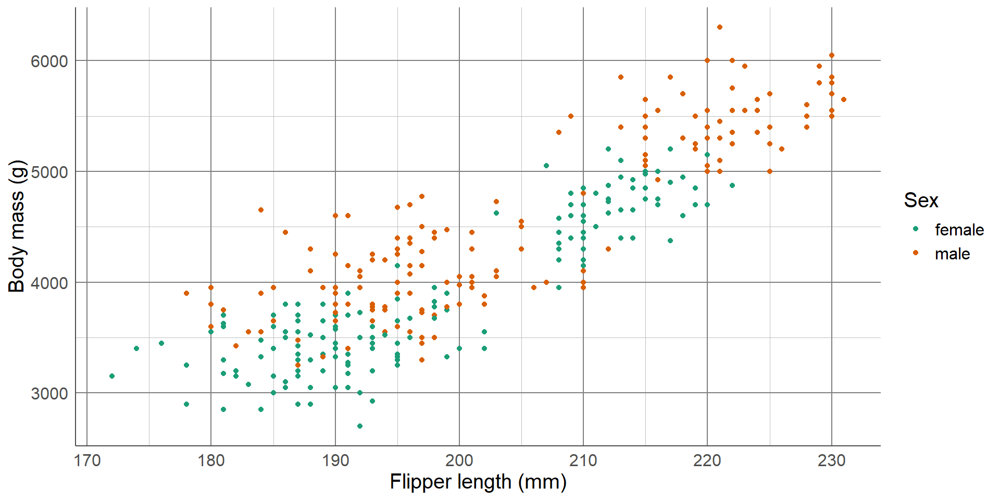Multiple regression
Let’s extend the previous model to account for the sex of penguins:
Body mass = \(\alpha\) + \(\beta_1 \times\) flipper length + \(\beta_2 \times\) male
Categorical variables are added as dummy variables
male = 1 if sex = male
male = 0 if sex = female
Multiple regression
Body mass = -5410.3 + 46.98 \(\times\) flipper length + 347.85 \(\times\) male
Coefficient estimates | 95% confidence | p-value | |
|---|---|---|---|
Intercept | -5,410.30 | [-5972.52, -4848.09] | <0.001 |
Flipper length | 46.98 | [44.15, 49.82] | <0.001 |
Male | 347.85 | [268.49, 427.21] | <0.001 |
Multiple regression
Body mass = -5410.3 + 46.98 \(\times\) flipper length + 347.85 \(\times\) male
Coefficients now represent expected change in outcome for unit increase in predictor after adjusting for other predictors
There is a significant positive association between flipper length and body mass after adjusting for differences between sexes
Model evaluation
There are going to be many potential models to answer our research question…how do we choose the best one??
- Consider the intention of the model
- Use common sense and prior knowledge
- Aim to find the most parsimonious
Model evaluation
Model evaluation can involve comparisons of model fitting statistics.
R-squared value: proportion of the outcome explained by the model
Adjusted R-squared penalises the R-squared value based on the number of predictors included in the model
Model evaluation
Adjusted R-squared value for flipper-only model: 0.76
Adjusted R-squared value for flipper + sex model: 0.8
Adding sex still increased the adjusted R-squared value, indicating its addition was worthwhile
Model evaluation
Prediction metrics are another family of useful model evaluation tools
They compare the observed outcome with the fitted model predictions.
- RMSE: root mean squared error \(\sqrt{\frac{1}{n}\sum{(y_i - \hat{y}_i)^2}}\)
- MAE: mean absolute error \(\frac{1}{n}\sum|y_i - \hat{y}_i|\)
Useful as they provide a measure of fit in context
Model evaluation
| Model | RMSE | MAE |
|---|---|---|
| Flipper only | 393.12 | 313.00 |
| Flipper + sex | 354.28 | 283.25 |
Adding sex into the model reduced performance metrics. This means it improved prediction.
If both prediction errors are large (in context of the problem), consider trying to improve them in some way
Model diagnostics
Linear regression is a parametric method: it has assumptions that must be checked
- Linearity: can present the outcome as a linear combination of predictors
- Independent predictors: no multicollinearity present
- Normally distributed residuals
- Equal variance of residuals AKA homoskedasticity
Model diagnistics
Predictors must be independent of one another.
Correlation can be accounted for to some degree, and dependency can exist between > 2 variables
Variance inflation factor (VIF): Measure of multicollinearity
\(VIF_i = \frac{1}{1 - R_i^2}\) for each predictor
Model diagnostics
VIF = 10 → \(R^2 = 0.9\): 90% of the variation in that predictor is explained by other predictors
Multicollinearity leads to unstable coefficient estimates and invalid inferential statistics
When there is evidence of multicollinearity (VIF > 5-ish), remove the offending variable(s)!
Model diagnostics
Residuals = model error terms: observed outcome - predicted outcome
Used to check final three assumptions:
- Linearity: plot residuals against each predictor
- Normal distribution: plot a histogram of residuals
- Equal variance: plot residuals against the predicted outcome
Model diagnostics
Linearity: check residual vs. predictor plots for patterns
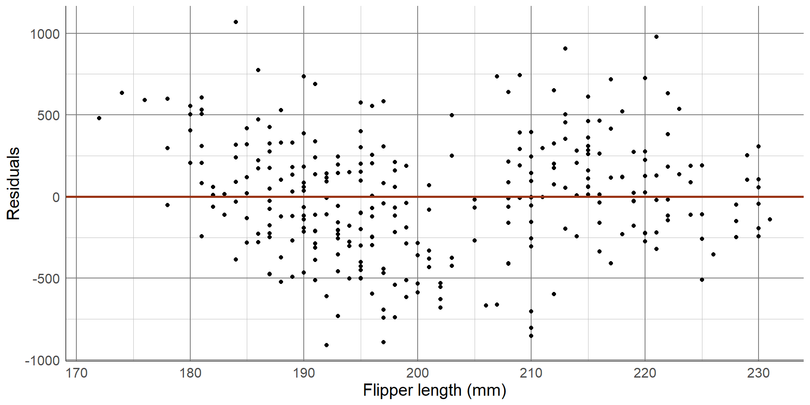Model diagnostics
Linearity: check residual vs. predictor plots for patterns
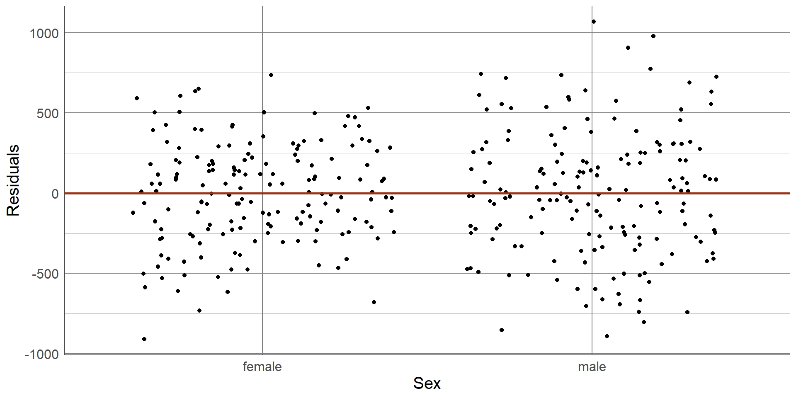Model diagnostics
Normally distribution residuals

Model diagnostics
Homoskedasticity: check residual vs. prediction plots for patterns
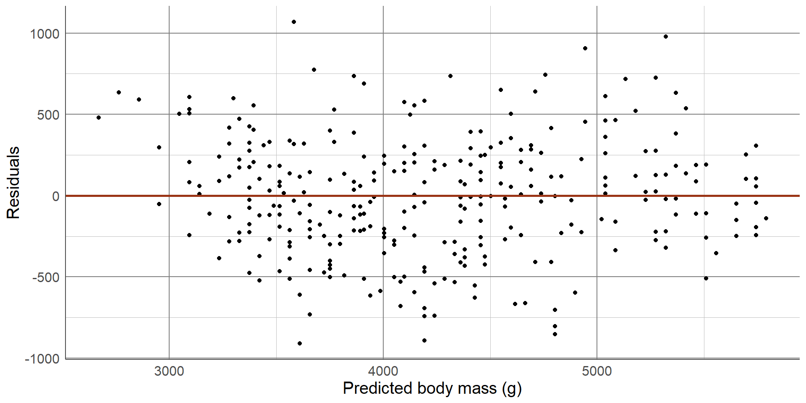Generalised linear models
When the outcome variable is not continuous, another regression model must be chosen.
Estimated coefficients relate to a transformed version of the outcome.
For example, a fitted poisson model (of counts) looks like this:
\(log(Y) = \alpha + \beta_1X_1 + \beta_2X_2 + \dots\)
Coefficients (\(\alpha\), \(\beta_1\), \(\beta_2\)) relate to the log of the outcome.
Generalised linear models
To interpret coefficients, they must be back-transformed to relate to the original outcome.
For example, in the poisson case, we apply the exponential function (the opposite of the log) to the equation
This makes interpretation of other regression models slightly more difficult but not impossible!
Generalised linear models
Statistical models are based on probabilistic assumptions.
These assumptions must be true for results for be valid
Different regression types have different assumptions but all share these two:
1. Observations must be independent of one another
2. It must be possible to represent the relationship between the (transformed) outcome and predictors using a linear equation
Beyond GLMs
When either of these assumptions are not valid, we must consider other models
Mixed models (or GLMM, multilevel models, random effect models) account for dependency structures in data:
- Spatial data
- Temporal data
- Data on clusters (e.g. households)
Beyond GLMs
When either of these assumptions are not valid, we must consider other models
Additive models (GAMs) are useful when modelling non-linear relationships
Allow smooth functions of predictors, \(s(X)\), to be entered into a model:
g(Y) = \(\alpha + \beta_1X_1 + \dots + s(X_j)\)
Final thoughts
Final thoughts
Statistics is a huge topic
Do not underestimate planning stage: research questions, biases and exploratory work
Complex analysis can not overcome bad data
Do not make inferential statements about sample estimates and do not make causal statements unless performing causal analysis
Final thoughts
Choose analysis methods based on the research question rather than the available data
Models should be built to address this question and using common sense/background knowledge not based on p-values
If a method requires assumptions to be met, check these before communicating results
Final thoughts
Many free statistical software packages available
R is a favourite of statisticians (me included!) and has a huge online community to help learn and TONS of free resources
Python is a favourite of data scientists and has a rapidly growing community
Excel will do basic stats but is limited and prone to issues!
Thank you for listening!